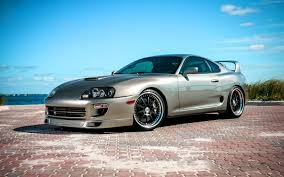

ToyotaSupra
O Toyota Supra (em japonês: トヨタ・スープラ, Hepburn: Toyota Sūpura) é um automóvel desportivo produzido pela fabricante japonesa Toyota entre 1978 e 2002, e desde 2019 até o presente. O nome "Supra" é derivado do prefixo latino, que significa "acima", "ultrapassar" ou "ir além".[1] O Supra possui linhas agressivas e um aerofólio para gerar sustentação negativa e dar mais esportividade ao design do carro. O Supra é equipado com muita tecnologia, dispõe de controle de tração e uma excelente capacidade de frenagem.
Primeira geração (A40/A50; 1978-1981)O Toyota Supra surgiu em 1978, com desenvolvimento baseado na plataforma do Toyota Celica, porém com algumas características próprias e que viriam mais tarde serem as responsáveis pelo sucesso que o carro alcançou. As primeiras diferenças que se notaram foram em tamanho, pois o Supra era mais comprido e largo que o Celica. Mecanicamente recebeu suspensão independente nas quatro rodas, bem como freios a disco também nas quatro. Todavia, a mais marcante alteração em relação à plataforma do Celica ficou por conta do motor adotado, um 6 cilindros em linha de 2.6 litros, que foi o primeiro motor da Toyota a receber injeção eletrônica de combustível, desenvolvido especialmente para ele e que recebeu a designação 4ME. Esta primeira geração ficou conhecida por MA46. Em 1981, ainda na sua primeira geração, um novo motor SOHC de 2.8 litros passou a equipar o carro, dando início ao processo que faria nascer a segunda geração de Supras. Todavia, a mais marcante alteração em relação à plataforma do Celica ficou por conta do motor adotado, um 6 cilindros em linha de 2.6 litros, que foi o primeiro motor da Toyota a receber injeção eletrônica de combustível, desenvolvido especialmente para ele e que recebeu a designação 4ME. Esta primeira geração ficou conhecida por MA46. Em 1981, ainda na sua primeira geração, um novo motor SOHC de 2.8 litros passou a equipar o carro, dando início ao processo que faria nascer a segunda geração de Supras.
Foi apenas em 1993 que a quarta geração do Supra foi lançada. Neste modelo os faróis escamoteáveis foram removidos e o carro ganhou uma carroçaria muito mais resistente e mais arredondada que as anteriores. A redução de peso foi extremamente importante para este modelo, perdendo quase 60 kg (132 lb) em relação à geração anterior, graças ao uso de alumínio no capô, no teto e nos suportes dos pára-choques. Com esta geração vem mais tecnologia e mais novidades para os afoitos apaixonados pelo carro. Desta vez duas opções de motorização, sendo uma de 6 cilindros (2JZ-GE), 3.0 litros e 24 válvulas com duplo comando no cabeçote e com controle variável de abertura das válvulas, responsável por 220 cavalos de potência, e outra (2JZ-GTE) com as mesmas características, porém com dois turbos sequenciados que rendiam até 325 cavalos de potência[4].

Equipado com câmbio manual de 6 velocidades Getrag, o Supra biturbo exportado para os países que não fazem exigência do limitador eletrônico de velocidade, alcança 250 km/h (com o limitador eletrônico chega a 180 km/h) e acelera de 0-100 km/h em 5,3 segundos. Porém nos diversos países europeus e mesmo nos EUA - um grande mercado para o Supra - as regulamentações de emissão de poluentes, impuseram restrições a carros como ele e alguns de seus concorrentes, fazendo com que em 1999 suas vendas fossem encerradas. A produção continuou no Japão até agosto de 2002, cessando devido a padrões de emissão restritivos.
Como um carro desportivo icônico, o Toyota Supra apareceu em vários videojogos de corrida, filmes, vídeos musicais e programas de televisão. Alguns dos aspectos mais notáveis são as aparições nos videojogos Grand Theft Auto: San Andreas (como uma paródia do carro), Gran Turismo, Forza Motorsport, Need for Speed, Midnight Club, Assetto Corsa e Asphalt 8: Airborne.
Um Supra de 1995 também apareceu no filme de ação de 2001 The Fast and the Furious; em 2003 em 2 Fast 2 Furious; em 2009 em Fast & Furious; em 2015 em Furious 7, como uma homenagem ao falecido ator Paul Walker; e Fast & Furious 9 apresenta um GR Supra laranja de 2020, a mesma cor do carro que apareceu no primeiro filme da série, que é dirigido por Han Seoul-Oh e Jakob Toretto, irmão de Dominic Toretto.
Em 1981 a Toyota lança a segunda geração do carro e ainda sob o nome de MA61 Celica Supra, mas com uma série de novidades que só mais tarde o Celica viria a incorporar, como os faróis escamoteáveis e o aerofólio incorporado à carroceria, como o novo motor de seis cilindros e também 2.8 litros, porém com duplo comando no cabeçote (DOHC) e que desenvolvia 145 cavalos de potência, já suficientes para fazê-lo acelerar aos 100 km/h em menos de 8,5 segundos e ultrapassar a barreira dos 200 km/h. Um ano após o lançamento desta geração, o seu motor recebe mais algumas modificações, chegando aos 150 cavalos.
Supra 1994
Quem é fã da franquia Velozes e Furiosos certamente vai lembrar de um dos principais carros do 1º filme: o Toyota Supra laranja, que pertencia ao personagem Brian O'Conner – interpretado pelo ator Paul Walker, que nos deixou em 2013. O modelo original foi leiloado em 2021 pela bagatela de US$ 550 mil – cerca de R$ 2,8 milhões na cotação atual.

Segundo a Barret-Jackson, esse Supra foi utilizado em tomadas internas e externas durante o primeiro "Velozes e Furiosos" (2001), e trazia sempre o Paul Walker ao volante. A descrição do site aponta que o carro foi feito especialmente para o filme por Eddie Paul, da oficina The Shark Shop, na Califórnia. Aliás, esse Supra do primeiro filme chegou a sofrer alterações para ser convertido no Supra dourado que aparece no "+Velozes +Furiosos" (2003). Depois de ser usado no segundo filme, o Supra voltou a sua famosa especificação anterior.
O Supra que será leiloado vem com pintura laranja perolizada, tonalidade que segundo a empresa era a mesma disponível no antigo Lamborghini Diablo (será por isso que o Supra deixou a Ferrari 355 preta para trás na cena da rodovia?). Além disso, a carroceria mantém o adesivo verde lateral conhecido como “Nuclear Gladiator” (uma volta ao tempo com o tuning dos anos 2000), bem como um kit de carroceria composto por spoiler dianteiro e saias laterais da Bomex, capô inspirado nas peças da TRD (antiga divisão esportiva da Toyota), um enorme aerofólio traseiro biplano de alumínio da APR e rodas de cinco raios com 19 polegadas.
E enquanto algum dos Supra usados no filme tinha motor preparado, essa unidade traz sob o capô um conjunto original. O carro vem equipado com o famoso 2JZ (o Supra foi vendido também em versões naturalmente aspiradas de 223 cv), formado por um seis cilindros em linha de 3,0 litros biturbo, que rende 324 cv e 43,5 kgfm de torque no modelo para exportação, pois o Supra japonês tinha 280 cv e 43,8 kgfm. Apesar da cabine exibir um câmbio pequeno e redondo que parece manual, esse carro vem com uma transmissão automática de 4 marchas.
Em 2015, a Mecum leiloou um Supra diferente do “Velozes e Furiosos” por US$ 185.000 (R$ 985.000 em conversão direta). Apesar de ser praticamente igual a essa unidade, o carro tinha um motor de seis em linha naturalmente aspirado e câmbio manual de 5 marchas.
A empresa não divulgou o valor inicial do Supra para os interessados mandarem seus lances, mas adianta que quem arrematá-lo levará ainda para casa um amplo histórico de documentação do carro, além de um certificado de autenticidade provando sua participação no Velozes e Furiosos.
As gerações dos supras do mundo
- A40, feito para os EUA. 1978 a 1981;
- A60, ainda a partilhar. 1981 a 1986;
- A70, ganhar independência. 1986 a 1993;
- A80, o supercarro. 1993 a 2002;
- A90, chegam as sinergias. 2019 a ?.
- Toyota GR Supra 2024
- Toyota Supra A80
- Toyota Supra A80
- Toyota GR Supra 2024
Supra mais forte
Supra mais raro
Supra mais velho
Supra mais novo